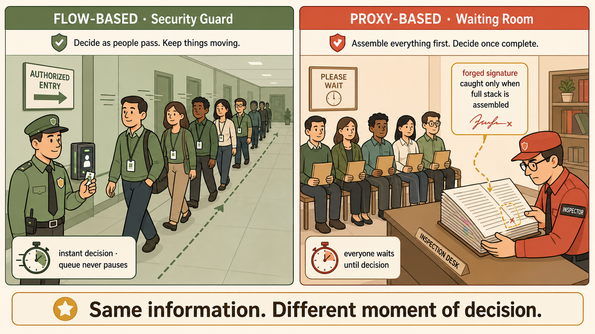

Same Depth, Different Timing
The most common misconception about flow-based inspection is that it only reads headers. It doesn't. Flow-based inspection reads full packet payloads — it can see Layer 7 content, application signatures, and threat patterns. So can proxy-based inspection.
The difference is not what they inspect. It is when they decide.
Inspects as packets stream through. Makes decisions in real time on each packet as it passes.
Does not wait for the complete data stream. Acts immediately.
Can be NP7 offloaded via NTurbo.
Buffers the entire stream first. Reassembles the full content before making a decision.
Waits for completeness. Acts after the fact.
Cannot be NP7 offloaded. CPU only.
The Security Guard vs The Waiting Room
Two inspectors. Same information. Different moment of decision.
Flow-based = Security guard in a corridor. Watches each person as they walk through. Makes an instant call — pass or stop — on every individual, in real time. Never pauses the queue.
Proxy-based = Waiting room inspector. Stops everyone. Collects all documents. Reads everything in full. Only then decides who may proceed. No one moves until the full picture is assembled.
Both inspectors read the same information. The guard acts faster. The waiting room inspector catches things that only appear when the full picture is assembled — like a document that seems legitimate page by page but contains a forged signature on the last page.

Same information — different moment of decision.
Flat minimalist cartoon illustration, cream background, two side-by-side scenes. Left scene: a calm security guard standing in a corridor checking each person's badge as they walk past in a continuous stream — labelled "Flow-Based". Right scene: a waiting room where all visitors are seated holding documents while an inspector reads a large stack of papers at a desk before anyone moves — labelled "Proxy-Based". Simple geometric figures, no text inside the image except the two labels. Muted blue, amber, and cream colour palette. Clean editorial style.
Because proxy-based inspection buffers the complete data stream before deciding, it can detect threats that only become visible when the full content is assembled. Examples include:
- A malicious file that is split across many packets — only recognisable when fully reassembled
- Encoded or obfuscated payloads where the threat only reveals itself after the full object is decoded
- Quota-based controls — you cannot enforce a "30-minute category limit" without tracking the full session over time
- Certain antivirus signatures that require the complete file before matching
Flow-based inspection acts on what it sees now. Proxy-based inspection waits until it can see everything. The trade-off: completeness costs CPU time and latency.
Why This Choice Changes Everything
This distinction is not just academic. It directly determines whether the NP7 silicon can accelerate your traffic — or whether every packet must be processed by the main CPU.
| Scenario | NP7 Offload? | Why |
|---|---|---|
| No security profiles | ✅ Yes — full offload | Pure forwarding — NP7 handles entirely after session setup |
| Flow-based IPS / App Control | ✅ Yes — via NTurbo | NTurbo bridges NP7 and IPS engine; CP handles pattern matching |
| Proxy-based any profile | ❌ No — CPU only | Buffering requires CPU to hold and reassemble the full stream |
| Mixed flow + proxy profiles | ❌ No — CPU only | Any proxy profile on a policy forces the entire session to CPU |
| np-acceleration disabled on policy | ❌ No — CPU only | Explicitly overrides hardware offload regardless of profile type |